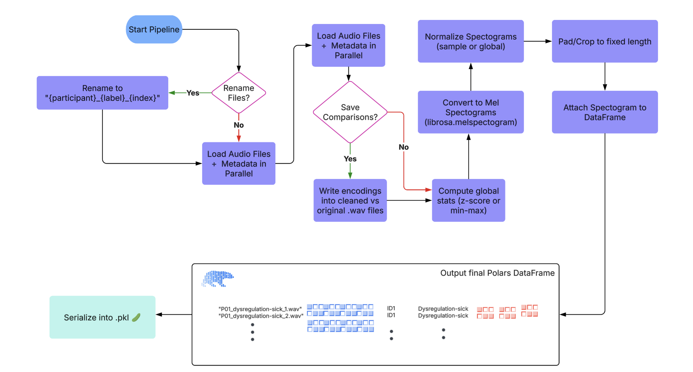

Contributions
-
Vishesh Narayan: Helped conceive and define the project scope and objective (A). He developed the data preprocessing pipeline and extracted key audio features (B), conducted exploratory data analysis and visualizations (C), and contributed to the design and implementation of ML models including CNN, classical classifiers, and Attention-based models (D). Vishesh also ran training experiments and model evaluations (E), helped interpret results and refine insights (F), and contributed heavily to writing and formatting the final tutorial report (G).
-
Shivam Amin: Improved dataset loading by building parallel processing functions for faster and more efficient data handling along with waveform cleaning, spectrogram generation, and acoustic feature extraction (B). He contributed to exploratory data analysis and interpretation (C), helped design and implement ML models (D), participated in interpreting visualizations and results (F), and helped write and polish the final tutorial (G).
-
Deval Bansal: Contributed to EDA through feature summary statistics and comparative plots (C), helped build classification models and optimize hyperparameters using the elbow method (D), ran training and testing procedures on classical (E), created supporting visualizations and analysis summaries (F), and co-authored the final report (G).
-
Eric Yao: Assisted in audio feature extraction and comparative analysis of spectral signatures (C), developed deep learning models including CNN variants and preprocessing logic (D), supported model training and hyperparameter tuning (E), helped interpret results and plot visual comparisons (F), and contributed to the overall report structure and clarity (G).
-
Eshan Khan: Analyzed MFCC and pitch statistics across label groups and visualized feature correlations (C), contributed to classifier experimentation and CNN architecture selection (D), supported training runs and validation of model outputs (E), assisted in visualizing trends and summarizing results (F), and contributed to writing key sections of the final tutorial report (G).
Introduction
Our project focuses on classifying non-verbal vocalizations from autistic individuals using machine learning.
These vocalizations—such as laughter, protest, or requests—carry important expressive intent, especially for individuals
who are minimally verbal or non-speaking.
The central question we aim to answer is:
Can we detect and distinguish different types of vocal intent (e.g., "yes", "no", "frustrated", "delighted") based on acoustic features and spectrograms of the audio?
We explore whether statistical differences in pitch, frequency, and spectral entropy can be effectively leveraged
by ML models to make these classifications.
This question is important because non-verbal communication plays a crucial role in how many autistic individuals
interact with the world. Building systems that can interpret these vocal cues more accurately has the potential
to improve assistive technologies, support caregivers, and advance research in inclusive communication tools.
Data Curation
In this section, we will go over details of the dataset and transforming our data into a indexable interactive data frame.
Dataset
For this project, we use the ReCANVo dataset, which contains real-world vocalizations of non-verbal autistic children and young adults. Each vocalization is labeled with its intended expressive category—such as happy, frustrated, hungry, or self-talk—allowing for supervised learning approaches to intent classification.
The dataset was compiled by Dr. Kristine Johnson at MIT as part of a study exploring how machine learning techniques can be used to interpret communicative vocal cues in autistic individuals. Audio samples were recorded in naturalistic settings, making this dataset especially valuable for research on real-world assistive technologies.
Dataset citation:
Narain, J., & Johnson, K. T. (2021). ReCANVo: A Dataset of Real-World Communicative and Affective Nonverbal Vocalizations [Data set]. Zenodo. https://doi.org/10.5281/zenodo.5786860
DataFrame creation
We loaded the audio files for our dataset using librosa, along with associated metadata from a CSV file that included labels, participant IDs, and file indices. All of this information was organized into a structured polars DataFrame. Because audio loading is computationally intensive and initially caused RAM issues, Shivam implemented a multi-threaded approach to parallelize the loading process. This optimization significantly reduced loading times and improved memory efficiency, preventing our kernel from crashing (so our kernel didn't crash 🥀).
Show/Hide Full Loading code
def load_audio_metadata(csv_path: str,
audio_dir: str,
limit: Union[int, None] = None,
clean_audio_params: dict = None,
save_comparisons: bool = False,
comparison_dir: str = 'audio_comparisons') -> pl.DataFrame:
"""
Loads audio metadata and processes files in parallel.
Args:
csv_path (str): Path to CSV file with metadata.
audio_dir (str): Directory where audio files are stored.
limit (int, optional): Number of rows to load.
clean_audio_params (dict, optional): Parameters for cleaning.
save_comparisons (bool): Save original vs cleaned audio files.
comparison_dir (str): Directory for saved audio comparisons.
Returns:
pl.DataFrame: DataFrame with processed audio metadata.
"""
df = pl.read_csv(csv_path).drop_nulls(subset=['Filename'])
if limit:
df = df.head(limit)
# Default audio cleaning parameters
default_clean_params = {
'denoise': True,
'remove_silence': True,
'normalize': True,
'min_silence_duration': 0.3,
'silence_threshold': -40
}
clean_params = {**default_clean_params, **(clean_audio_params or {})}
# Prepare file processing queue
file_info_list = [
(row['Filename'],
os.path.join(audio_dir, row['Filename']),
clean_params,
save_comparisons,
comparison_dir,
row['ID'],
row['Label'],
row['Index'])
for row in df.iter_rows(named=True)
]
# Modify process_audio_file to handle the additional parameters
def process_audio_file(
file_info: Tuple[str, str, dict, bool, str, int, str, int]
) -> Union[Tuple[str, List[float], int, str, float, int], None]:
"""
Loads and processes an audio file.
Args:
file_info (Tuple): Contains filename, full path, cleaning params,
saving options, ID, Label, and Index.
Returns:
Tuple[str, List[float], int, str, float, int] | None: Processed
audio metadata or None if failed.
"""
(
file_name, file_path, clean_params,
save_comparisons, comparison_dir,
file_id, label, index
) = file_info
y, sr = librosa.load(file_path, sr=SAMPLE_RATE)
cleaned_y = clean_audio(y, sr, **clean_params)
if save_comparisons:
save_audio_comparison(y, cleaned_y, sr, file_name, comparison_dir)
duration = len(cleaned_y) / sr
return file_name, cleaned_y.tolist(), file_id, label, duration, index
# Use ThreadPoolExecutor for parallel processing
with ThreadPoolExecutor(max_workers=os.cpu_count()) as executor:
results = list(executor.map(process_audio_file, file_info_list))
# Filter out None values from failed processing
audio_data = [res for res in results if res]
return pl.DataFrame(
audio_data,
schema=["Filename", "Audio", "ID", "Label", "Duration", "Index"], orient='row'
)
Exploratory Data Analysis
In this, we will overview all of our Exploratory Data Analysis (EDA) done to perform statistical tests on our features, develop assumption about signals in our data, and visualize it too of course.
Audio Preprocessing Pipeline Overview
Our preprocessing pipeline for audio data follows a structured and modular sequence to prepare high-quality inputs for downstream tasks. The steps are as follows:

This end-to-end pipeline ensures that raw audio recordings are systematically cleaned, transformed, and structured, making them ready for efficient modeling and analysis. We have provided the preprocessing code as well:
Show/Hide Full Pipeline Code
# ------------------- optional preprocessing ------------------- #
def rename_audio_files(csv_path: str,
audio_dir: str,
output_csv: str = "renamed_metadata.csv") -> None:
"""
Renames audio files based on Participant and Label and saves new metadata.
Args:
csv_path (str): Path to the input metadata CSV.
audio_dir (str): Directory containing audio files.
output_csv (str): Filename for the output metadata CSV.
"""
df = pl.read_csv(csv_path)
renamed_files = []
file_counts = {}
for file in df.iter_rows(named=True):
org_name = file['Filename']
id = file['Participant']
label = file['Label']
key = (id, label)
file_counts[key] = file_counts.get(key, 0) + 1
index = file_counts[key]
new_name = f"{id}_{label}_{index}.wav"
old_path = os.path.join(audio_dir, org_name)
new_path = os.path.join(audio_dir, new_name)
if not os.path.exists(old_path):
print(f"❌ File not found: {old_path}. Skipping renaming process.")
return # Exit the function immediately if any file is missing
os.rename(old_path, new_path)
renamed_files.append((new_name, id, label, index))
# If renaming was successful, save the updated metadata
renamed_df = pl.DataFrame(renamed_files, schema=["Filename", "ID", "Label", "Index"], orient="row")
output_path = os.path.join(audio_dir, output_csv)
renamed_df.write_csv(output_path)
def save_audio_comparison(original_y: np.ndarray,
cleaned_y: np.ndarray,
sr: int,
filename: str,
output_dir: str = 'audio_comparisons') -> None:
os.makedirs(output_dir, exist_ok=True)
base_name = os.path.splitext(filename)[0]
original_path = os.path.join(output_dir, f"{base_name}_original.wav")
cleaned_path = os.path.join(output_dir, f"{base_name}_cleaned.wav")
sf.write(original_path, original_y, sr)
sf.write(cleaned_path, cleaned_y, sr)
def clean_audio(y: np.ndarray,
sr: int,
denoise: bool = True,
remove_silence: bool = True,
normalize: bool = True,
min_silence_duration: float = 0.3,
silence_threshold: float = -40) -> np.ndarray:
"""
Enhanced audio cleaning function tailored for voice recordings of autistic individuals.
Parameters:
y (np.ndarray): Input audio time series
sr (int): Sampling rate
denoise (bool): Apply noise reduction
remove_silence (bool): Remove long silent segments
normalize (bool): Normalize audio amplitude
min_silence_duration (float): Minimum duration of silence to remove (in seconds)
silence_threshold (float): Decibel threshold for silence detection
Returns:
np.ndarray: Cleaned audio time series
"""
if len(y) == 0:
return y # Return empty if the input is empty
cleaned_audio = y.copy()
if normalize:
cleaned_audio = librosa.util.normalize(cleaned_audio)
# Noise reduction using spectral gating
if denoise:
stft = librosa.stft(cleaned_audio) # Compute STFT with valid n_fft
mag, phase = librosa.magphase(stft) # Magnitude and phase
noise_threshold = np.median(mag) * 0.5
mask = mag > noise_threshold # Apply noise threshold mask
cleaned_stft = stft * mask
cleaned_audio = librosa.istft(cleaned_stft) # Convert back to time domain
# Remove long silent segments
if remove_silence:
frame_length = int(sr * min_silence_duration)
hop_length = max(1, frame_length // 2) # Ensure hop_length is at least 1
non_silent_frames = librosa.effects.split(
cleaned_audio,
top_db=abs(silence_threshold),
frame_length=frame_length,
hop_length=hop_length
)
if len(non_silent_frames) == 0:
return np.array([]) # Return empty if all frames are silent
cleaned_audio = np.concatenate([
cleaned_audio[start:end] for start, end in non_silent_frames
])
# Apply high-pass filter to reduce low-frequency noise
b, a = signal.butter(6, 80 / (sr/2), btype='high')
cleaned_audio = signal.filtfilt(b, a, cleaned_audio)
return cleaned_audio
def compute_or_load_global_stats(ys: List[np.ndarray],
sr: int=SAMPLE_RATE,
n_mels: int = 128,
method: str = "zscore",
stats_file: str = "global_stats.json",
force_recompute: bool = False) -> Dict[str, float]:
"""
Computes or loads global normalization stats for Mel spectrograms.
Parameters:
ys (List[np.ndarray]): List of raw audio waveforms.
sr (int): Sample rate.
n_mels (int): Number of Mel bands.
method (str): 'zscore' or 'minmax'.
stats_file (str): Path to save/load stats JSON.
force_recompute (bool): If True, recomputes even if file exists.
Returns:
Dict[str, float]: Stats dictionary (mean/std or min/max).
"""
if not force_recompute and os.path.exists(stats_file):
print(f"🗂️ Loading global stats from {stats_file}")
with open(stats_file, "r") as f:
return json.load(f)
print(f"📊 Computing global stats with method '{method}'...")
all_values = []
for y in ys:
S = librosa.feature.melspectrogram(y=y, sr=sr, n_mels=n_mels)
S_db = librosa.power_to_db(S, ref=np.max)
all_values.append(S_db.flatten())
all_values = np.concatenate(all_values)
stats = {}
if method == "zscore":
stats = {
"mean": float(np.mean(all_values)),
"std": float(np.std(all_values))
}
elif method == "minmax":
stats = {
"min": float(np.min(all_values)),
"max": float(np.max(all_values))
}
else:
raise ValueError("Unsupported method. Use 'zscore' or 'minmax'.")
# Save stats to file
with open(stats_file, "w") as f:
json.dump(stats, f)
print(f"💾 Saved global stats to {stats_file}")
return stats
def audio_to_spectrogram(y: np.ndarray,
sr: int=SAMPLE_RATE,
n_mels: int = 128,
target_length: int = 128,
normalization: str = "minmax",
normalize_scope: str = "sample", # "sample" or "global"
global_stats: dict = None) -> np.ndarray:
"""
Converts a raw audio waveform into a normalized, fixed-size Mel spectrogram.
Parameters:
y (np.ndarray): Raw audio waveform.
sr (int): Sample rate of the audio.
n_mels (int): Number of Mel bands.
target_length (int): Number of time steps to pad/crop to.
normalization (str): 'minmax' or 'zscore'.
normalize_scope (str): 'sample' for per-sample normalization,
'global' for dataset-wide using global_stats.
global_stats (dict): Required if normalize_scope='global'. Should contain
'mean' and 'std' or 'min' and 'max'.
Returns:
np.ndarray: Mel spectrogram of shape (n_mels, target_length).
"""
def _normalize(S_db: np.ndarray, method: str, scope: str, stats: dict = None):
if scope == "sample":
if method == "minmax":
return (S_db - S_db.min()) / (S_db.max() - S_db.min())
elif method == "zscore":
mean = np.mean(S_db)
std = np.std(S_db)
return (S_db - mean) / std
else:
if method == "minmax":
return (S_db - stats["min"]) / (stats["max"] - stats["min"])
elif method == "zscore":
return (S_db - stats["mean"]) / stats["std"]
def _pad_or_crop(S: np.ndarray, target_len: int):
current_len = S.shape[1]
if current_len < target_len:
pad_width = target_len - current_len
return np.pad(S, ((0, 0), (0, pad_width)), mode='constant')
else:
return S[:, :target_len]
S = librosa.feature.melspectrogram(y=y, sr=sr, n_mels=n_mels)
S_db = librosa.power_to_db(S, ref=np.max)
S_norm = _normalize(S_db, method=normalization, scope=normalize_scope, stats=global_stats)
S_fixed = _pad_or_crop(S_norm, target_len=target_length)
return S_fixed
# ----------------------- pipeline ----------------------- #
def pipeline(rename: bool = False,
limit: Union[int, None] = None,
clean_audio_params: dict = None,
save_comparisons: bool = False,
) -> pl.DataFrame:
"""
Pipeline to run all preprocessing functions with timing and optional audio cleaning.
Only supports saving to .parquet (not CSV) to handle arrays properly.
"""
print("🚀 Starting preprocessing pipeline...")
start = time.time()
if rename:
t0 = time.time()
rename_audio_files(
csv_path=ORG_CSV_PATH,
audio_dir=AUDIO_DIR,
)
print(f"📝 rename_audio_files completed in {time.time() - t0:.2f} seconds")
t0 = time.time()
df = load_audio_metadata(
csv_path=RENAME_CSV_PATH,
audio_dir=AUDIO_DIR,
limit=limit,
clean_audio_params=clean_audio_params,
save_comparisons=save_comparisons
)
print(f"⏳ load_audio_metadata completed in {time.time() - t0:.2f} seconds")
t0 = time.time()
stats = compute_or_load_global_stats(df["Audio"].to_numpy(), sr=SAMPLE_RATE)
print(f"🧮 compute_or_load_global_stats completed in {time.time() - t0:.2f} seconds")
print("\n📈 Computed Statistics:")
for k, v in stats.items():
print(f" {k}: {v}")
print()
t0 = time.time()
df = df.with_columns([
pl.col("Audio").map_elements(lambda y: audio_to_spectrogram(
y=np.array(y),
sr=SAMPLE_RATE,
normalization='zscore',
normalize_scope='global',
global_stats=stats
), return_dtype=pl.Object).alias("Spectrogram")
])
print(f"🔊 Spectrogram generation completed in {time.time() - t0:.2f} seconds")
print(f"🏁 Full pipeline completed in {time.time() - start:.2f} seconds\n")
print(df)
return df
custom_clean_params = {
'denoise': True,
'remove_silence': True,
'normalize': True,
'min_silence_duration': 0.3,
'silence_threshold': -40
}
df = pipeline(
rename=False,
limit=None,
clean_audio_params=custom_clean_params,
save_comparisons=False
)
# Convert data to numpy arrays for serialization
df = df.with_columns([
pl.col("Audio").map_elements(
lambda y: np.array(y, dtype=np.float64).tolist(), return_dtype=pl.List(pl.Float64)
),
pl.col("Spectrogram").map_elements(
lambda s: np.array(s, dtype=np.float64).tolist(), return_dtype=pl.List(pl.List(pl.Float64))
)
])
# saves df to a pkl file to be cached and used later
with open("processed_data.pkl", "wb") as f:
pickle.dump(df, f)
This process results in the following DataFrame:
🚀 Starting preprocessing pipeline...
⏳ load_audio_metadata completed in 138.89 seconds
🗂️ Loading global stats from global_stats.json
🧮 compute_or_load_global_stats completed in 0.16 seconds
📈 Computed Statistics:
mean: -55.975612227106474
std: 18.55726476893056
🔊 Spectrogram generation completed in 29.24 seconds
🏁 Full pipeline completed in 168.32 seconds
We have also created a loading function for the .pkl so we don't have to rerun the whole pipeline every time we want to jump back into the notebook:
def open_pickle(path: str) -> pl.DataFrame:
with open(path, "rb") as f:
df = pickle.load(f)
return df